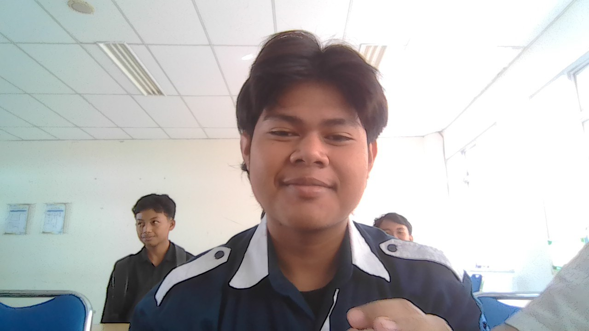

Profil Pribadi

Informasi Pribadi
| Nama | Muhammad Jois Iaquinta |
| Alamat | Sembungan Kidul, Dukun, Gresik |
| Tempat, Tanggal Lahir | Gresik, 05-08-2006 |
| Nomor HP | 085607181820 |
Riwayat Pendidikan
- MI: MI YKUI Maskumambang (2012 - 2017)
- MTs: MTs YKUI Maskumambang (2018 - 2020)
- SMK: SMK Maskumambang 1 (2021 - 2023)
- Kuliah: Universitas Trunojoyo Madura (2024 - sekarang)
Hobi dan Minat
- Memancing
- Main Mobile Legend
- Trading
Pengalaman
- Mengikuti Pelatihan PBB
- Magang di PT.Indobismar
Kesan dan Pesan
Kesan pertama saya masuk UTM, saya bangga banget bisa keterima di kampus yang saya pilih dengan prodi yang saya pilih juga.
Cita-cita saya pastinya ingin menjadi orang sukses di dunia maupun di akhirat.
Harapan saya semoga bisa lulus dengan cumlaude dan langsung mendapatkan pekerjaan dengan gaji 2 digit.
Formulir Tambahan